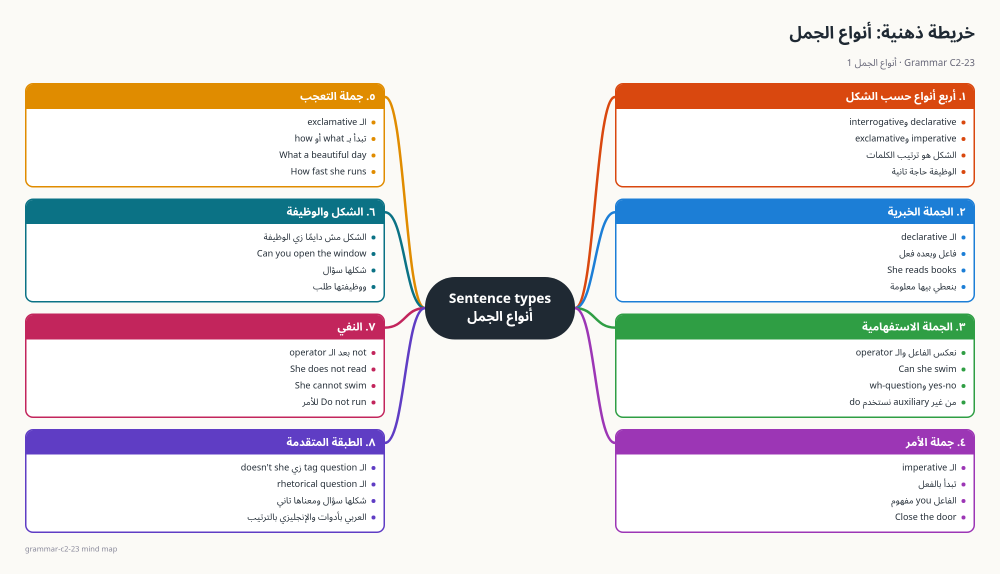

🦉
آداب اللغة الإنجليزية
⭐
0
🔥
استمر!
❓
كورس 2، أنواع الجمل 1: أنواع الجمل
📊
المستوى: من الصفر
كورس ٢ درس ٢٣
❓
القواعد الأكاديمية
📄 حمّل PDF الدرس
📝 ملخص الدرس (عربي) PDF
📝 Lesson Summary (English) PDF
🧠 الخريطة الذهنية PDF
🧠 شوف الخريطة الذهنية للدرس

→
الدرس اللي قبله
كل دروس الكورس
الدرس اللي بعده
←